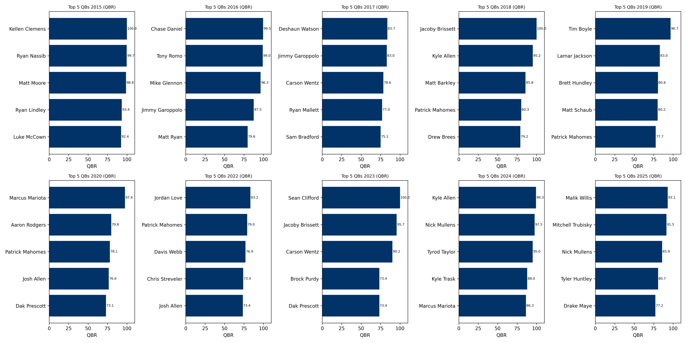
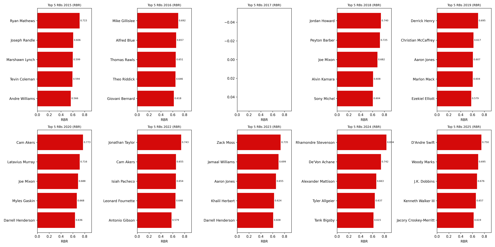

Top Quarterbacks by QBR (2015–2025)
This chart shows the top five quarterbacks in each season ranked by Total Quarterback Rating (QBR). QBR is designed to capture a quarterback’s overall impact on winning beyond traditional passing statistics.
Top Running Backs by RBR (2015–2025)
This chart displays the top five running backs each season based on a custom Running Back Rating (RBR), developed to measure both efficiency and production.
How the Metrics Work
Quarterback Rating (QBR)
Total Quarterback Rating (QBR) is ESPN’s comprehensive quarterback metric designed to measure a player’s overall contribution to winning. It is built on Expected Points Added (EPA) and incorporates passing, rushing, sacks, turnovers, and penalties. The metric adjusts for game context such as down, distance, score, time remaining, and opponent strength. QBR is reported on a 0–100 scale, where 50 represents league average performance.
Running Back Rating (RBR)
Running Back Rating (RBR) is a custom metric created for this project to evaluate running back performance in a consistent, data-driven way. RBR combines four season-level components: Success Rate, Yards per Attempt, Total Rushing Yards, and Total Touchdowns. Each component is normalized within a season and equally weighted, allowing the metric to reflect both efficiency and workload rather than raw volume alone.